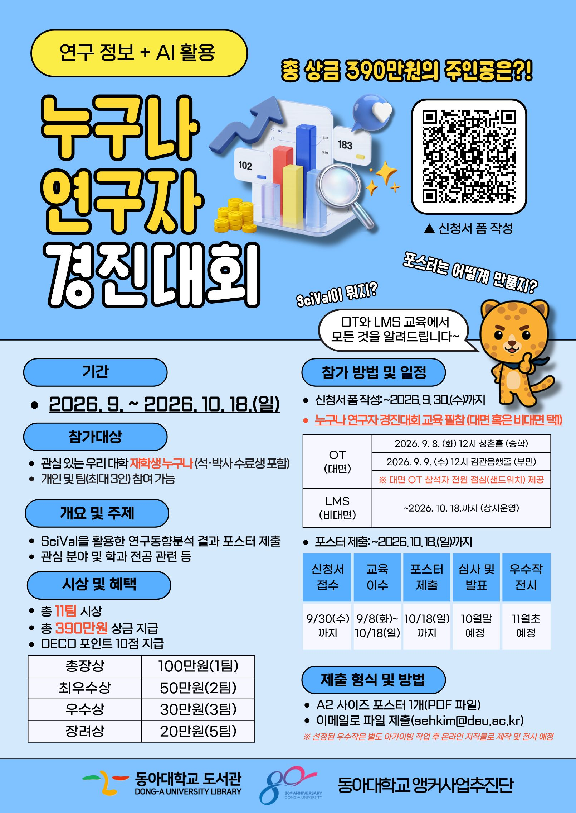

ABOUT THE COMPETITION데이터로 읽는
데이터로 읽는
연구의 흐름.
DATA · TREND · INSIGHT분석하고, 해석하고,
분석하고, 해석하고,
포스터에 담다.
내 전공 분야의 연구는 어디로 향하고 있을까요? ‘누구나 연구자’는 SciVal을 활용해 관심 분야의 연구 동향을 분석하고, 그 안에서 발견한 인사이트를 한 장의 포스터로 표현하는 경진대회입니다.
주제는 관심 분야나 학과 전공에서 자유롭게 선택합니다. 참가자는 연구 데이터를 살펴보고 동향을 해석해, 분석 결과를 그래프와 설명으로 정리합니다. 이 아카이브에서는 선정된 수상작을 PDF 원문으로 열람할 수 있습니다.
수상작 포스터 살펴보기 ↗
2026 누구나 연구자 경진대회 · 공식 포스터 ↗
2026 EDITION
연구 정보 + AI 활용
- 참가 대상
- 동아대학교 재학생 누구나
석·박사 수료생 포함, 개인 또는 최대 3인 팀 - 연구 주제
- SciVal을 활용한 관심 분야 및 전공 관련 연구 동향 분석
- 제출 작품
- 연구 포스터 1개 · PDF
- 대회 기간
- 2026년 9월 ~ 10월 18일
- 주관
- 동아대학교 도서관
동아대학교 앵커사업추진단
대회 문의: 김세훈 051-200-6272
AWARDS & RECOGNITION총 11팀 · 총상금 390만 원
시상 부문 및 상금
01
총장상
1팀
100만 원02
최우수상
2팀
각 50만 원03
우수상
3팀
각 30만 원04
장려상
5팀
각 20만 원